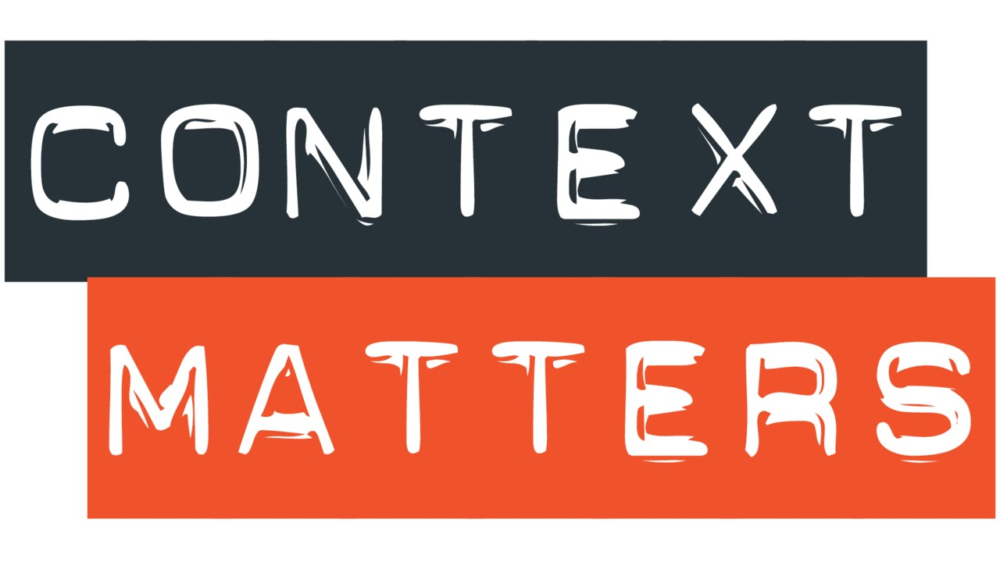

 接上一篇 Chatbot 1 - 使用 Dialogflow 十分钟搭建虚拟助手，这次我们将不再依赖 Dialogflow 提供的功能，而是从零到一手写代码，探索聊天机器人的基本工作原理，并搭建一个意式餐厅的在线客服机器人。
Articles by mult1vac
国内 Chatbot 初创公司收集
一份不完全清单，关于国内聊天机器人公司调研。发现国内和国外关注的点完全不同，国内更喜欢做大而全的「解决方案」，国外更喜欢做细分市场。在我看来，国内的 Chatbot 公司更加无趣一点，缺乏一些想象力。但 business is business，「有趣」并不是公司主要的关注点，这条赛道还有精彩的角逐。
国外 Chatbot 初创公司收集
调研了国外 Chatbot 公司，整理一份清单。国外的公司专注在细分市场，包括机器人自动创建、底层技术研究、知识管理、信息安全、高校信息服务、保险、CRM 等。甚至还看到了《黑镜》中曾出现过的科技 -- 保存人的生前记忆。相对于开放域在技术上面的限制，目前 Chatbot 还主要停留在封闭域的应用，因此，机器人在许多细分的市场还有很多机会。
Chatbot 1 - 使用 Dialogflow 十分钟搭建虚拟助手
 本文是一篇使用 Google Dialogflow、Python 和 Telegram 快速搭建聊天机器人的教程，bot 能根据提问，帮你从 WorldCoinIndex 上找到对应的货币价格。搭建的过程能帮你快速了解 Chatbot 的简单原理。Let’s go！
本文是一篇使用 Google Dialogflow、Python 和 Telegram 快速搭建聊天机器人的教程，bot 能根据提问，帮你从 WorldCoinIndex 上找到对应的货币价格。搭建的过程能帮你快速了解 Chatbot 的简单原理。Let’s go！
为什么我应该开始创作？
“When you don't create things, you become defined by your tastes rather than ability. Your tastes only narrow & exclude people. So create.” - by why_the_lucky_stiff
Write-up for Liberty Mutual's Hazard Prediction
 I'd say I did not bad (LB top25%) in this game and still have long way to go. Since for what I've done there are pros and cons, it's time to make a summing-up.
I'd say I did not bad (LB top25%) in this game and still have long way to go. Since for what I've done there are pros and cons, it's time to make a summing-up.
My solution to Kaggle's Otto Group Challenge
 This solution is for Kaggle's Otto Product Classification competition. The competition's goal was to classify items into 9 product categories based on 93 anonymous count features. I recently handed on this competition for practice purposes. Before this, I played with some kaggle 101 games like Julia, Titanic, etc. My personal goal in doing this was to learn how to tackle on a real kaggle challenge.
This solution is for Kaggle's Otto Product Classification competition. The competition's goal was to classify items into 9 product categories based on 93 anonymous count features. I recently handed on this competition for practice purposes. Before this, I played with some kaggle 101 games like Julia, Titanic, etc. My personal goal in doing this was to learn how to tackle on a real kaggle challenge.